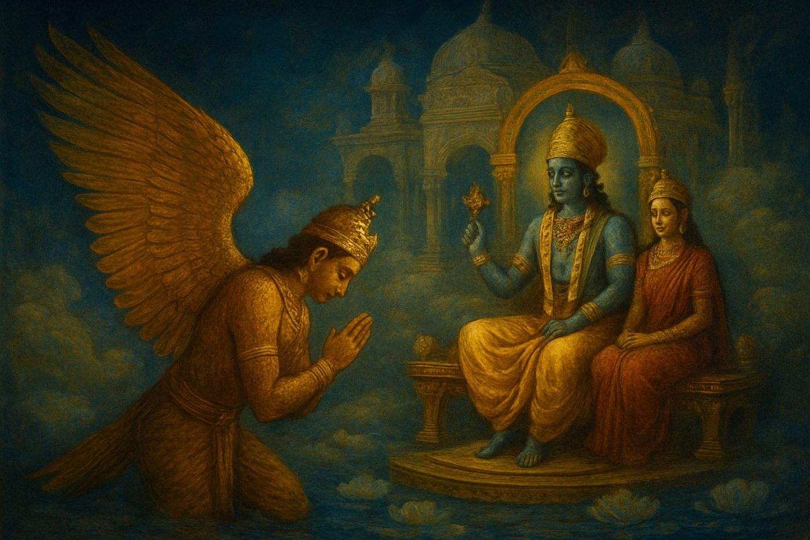
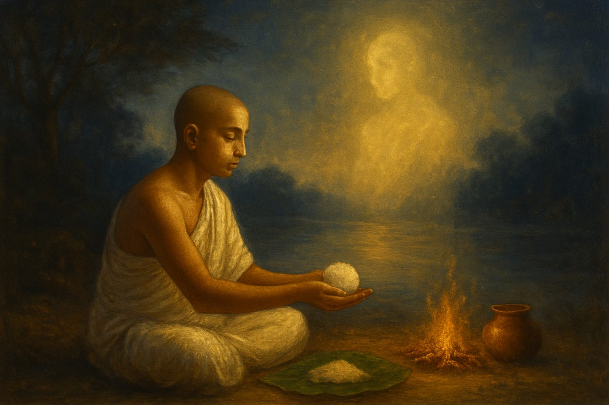
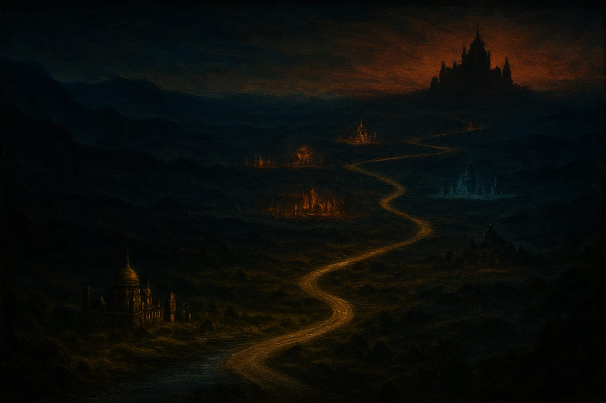

1What a person sees and feels in the last moment of life
2Why the soul leaves the body “the size of a thumb”
3How the family’s ten days of offerings build the soul a new body
4The 16 cities on the year-long road to Yama
Introduction
Before the Journey
An introduction
In many Hindu homes, when someone dies, a book is opened. For the thirteen days that follow, while the family keeps the rites and the house stays quiet, a priest or an elder reads from it aloud, a little each day. The family sits and listens. Children who will not understand it for years sit and listen too.
That book is the Garuda Purana, or more often a short version of it called the Saroddhara. It is one of the most read and least understood texts in the Hindu tradition. People know it as “the book about hell”. Many are a little afraid of it.
Some families will not keep a copy in the house except during a death. And yet the same families read it, every time, because it answers the question that every death leaves behind: where has this person gone, and what is happening to them now?
This book is an attempt to read the Garuda Purana slowly, verse by verse, and to understand what it is actually saying.
What the Garuda Purana is
The Puranas are the great story-books of Hinduism. Tradition counts eighteen major ones. They took shape over many centuries, were told and retold, and gathered into themselves cosmology, genealogy, pilgrimage, law, ritual and devotion. The Garuda Purana is one of them.
It takes its name from Garuda, the great eagle who carries the god Vishnu, because most of it is framed as a conversation between the two. Garuda asks; Vishnu answers.
The Garuda Purana is long and wide-ranging. One part of it, the Preta Khanda, the “Section on the Departed”, deals with what happens after death: the road the dead walk, the judgment, the hells and heavens, rebirth, and the rites the living perform for the dead.
Several centuries ago a scholar named Naunidhirama drew the essence of this section together into sixteen chapters and called his work the Saroddhara, “the essence drawn out”. This is the text that is read in homes today, and it is the text this book explains.
Volume 1 covers its first four chapters:
Chapter I, The Miseries of the Sinful. The last illness, the moment of death, the arrival of Yama’s messengers, the thirteen days, and the sixteen cities on the road.
Chapter II, The Way of Yama. The road itself: no shade, no water, twelve suns, the forest of sword-like leaves, the river Vaitarani, and the soul’s long regret, month by month.
Chapter III, The Torments of Yama. The arrival at Yama’s city, Chitragupta and the record of every deed, the judgment, and the hells.
Chapter IV, The Sins That Lead to Hell. The text’s own list of which actions lead where, and how a soul finally returns to life on earth.
Who is speaking
The Saroddhara is a story inside a story inside a story, and it helps to know the voices.
The outer frame is a forest called Naimisha, where a group of sages led by Shaunaka are performing a long sacrifice. They ask a storyteller named Suta to tell them about the fearful road after death.
Suta answers by repeating a conversation he once heard: one in which Garuda, the eagle, bowed before Vishnu in his heaven, Vaikuntha, and asked the very same question. Almost everything in this book is Vishnu speaking to Garuda.
When the text says “O Bird”, “O Tarkshya”, “O Son of Vinata” or “O Kashyapa”, it is Garuda being addressed. When it says “the Blessed Lord said”, it is Vishnu.
Inside Vishnu’s answer there are other voices still: Yama, the king of the dead; Chitragupta, his record-keeper; the messengers who lead the dead; and, most movingly, the dead themselves, who speak their regrets aloud on the road.
How to read it
The Garuda Purana describes pain in great detail. Burning sand, freezing winds, a river of blood, beatings, hells with names like “the Great Howling” and “Blind Darkness”. A modern reader can find this hard to take, and it is fair to ask what it is for.
Three things are worth keeping in mind.
First, it is an account of consequence, not cruelty. The central idea of this text, stated plainly in chapter I, verse 46, is that an action is not finished when it is done. Its result is still owed, and it will be met.
The road after death is the text’s way of showing that accounting in pictures. The torments are not punishments invented by an angry god. They are, again and again, the shape of what the person did, coming back to them.
The one who gave no water finds no water. The one who gave no shade finds none. The one who blocked other people’s roads finds their own road blocked.
Second, it is written for the living. No dead person reads the Garuda Purana. It is read to the family of the dead, in the days when they are most open to the question of how to live.
Its real purpose is in its quieter verses: give while you can; honour your parents; do not cheat; feed the hungry guest; dig a well where there is no water; keep the rites for those who have gone before you. The fear is there to make those verses heard.
Third, it belongs to its time. The Saroddhara was compiled in a society very different from ours, and some of its verses reflect rules about caste, about women and about ritual purity that many Hindus today, and many Hindu teachers, do not accept.
This book translates those verses honestly, because a reader deserves to know what the text says. Where a verse needs context, the commentary gives it, plainly and without preaching.
How this book is laid out
Each chapter of the Saroddhara is divided here into short readings of a few verses each. Every reading has three parts:
The verses. Each verse is given in a fresh, plain English rendering, numbered as in the 1911 edition, so you can always find your place in any other translation.
What it means. An explanation of the passage: the images, the ideas, the words that matter, and how it connects with what comes before and after.
The lesson. One line to carry away.
Along the way you will find short boxes: a Sanskrit word worth knowing, a custom that grew out of a verse, a question the text raises. At the end of each chapter there is a brief reflection, and at the back of the book a glossary, a guide to the sixteen cities of the road, and an index of verses.
You can read this book straight through, like a story, because it is one. It is the story of a single journey, told by a god to a bird, about a road that every one of us, the text insists, will one day walk.
Takeaway
Read the frightening verses for what they warn against, and the quiet verses for what they ask of you.

Chapter I
The Miseries of the Sinful
Death, the messengers, and the first thirteen days
“Karma that has not been lived through does not wear away, not in hundreds of millions of ages.”
Chapter I, verse 46
In this chapter
The first chapter follows a single person from the last illness to the start of the long road. It describes the moment of death in unflinching detail, the arrival of Yama’s two messengers, the soul “the size of a thumb” being drawn out of the body, a first brief visit to Yama, and the return home. Then it explains why the family’s offerings in the first ten days matter so much, how they build the soul a new body piece by piece, and how, on the thirteenth day, the soul sets out alone on a road of 86,000 yojanas through sixteen cities.
10 short readings · about 24 minutes
1 of 10Verses 1–93 min
The Tree and the Question
✦Read the original verses 1–9
1Glory to Madhusudana, who is like a great tree: his firm root is Dharma, his trunk the Vedas, his spreading branches the Puranas, his flowers the sacrifices, and his fruit, liberation.
2In the forest of Naimisha, the field of the gods, the sages led by Shaunaka performed sacrifices for thousands of years, seeking the world of heaven.
3–5One morning, after offering their oblations into the sacred fire, those sages came respectfully to the revered Suta, who was sitting at ease, and asked him: “You have told us of the happy path of the gods. Now we wish to hear about the fearful road of Yama, about the miseries of this world of birth and death, and about the means of ending its pain. Tell us truly about the sufferings of this world and the next.”
6Suta said: Listen, then. I will describe the road of Yama, so hard to walk, which brings happiness to those inclined to good and misery to those who do wrong.
7I will tell it just as the Blessed Vishnu told it to Garuda, son of Vinata, when Garuda asked him, so that your doubts may be removed.
8–9Once, when the Lord Hari was sitting at ease in Vaikuntha, Garuda bowed before him with reverence and said: “You have described to me the path of devotion in its many forms, and you have told me the highest goal of those who are devoted to you.”
The Saroddhara does not begin with death. It begins with a tree.
The opening verse is a blessing, and like most Sanskrit blessings it does a lot of work in a small space. Vishnu, here called Madhusudana, “the slayer of the demon Madhu”, is pictured as a living tree.
Its root is dharma, the right order of things, the way life ought to be lived. Its trunk is the Vedas, the oldest scriptures. Its branches are the Puranas, the story-books, of which this is one. Its flowers are the acts of worship people offer.
And its fruit, the thing the whole tree exists to produce, is moksha, liberation from the cycle of birth and death.
It is worth pausing on this, because it tells us how to read everything that follows. Before a single frightening word is spoken, the text has told us where it stands. The point of all of it, even the account of hell, is the fruit at the end: freedom.
Then the frame is set. Sages in a forest have already heard about the “happy path of the gods”. Now they want the other half.
Their question is broad: not only the road after death, but samsara itself, the whole turning world of birth and death, and how its pain can be ended. Suta answers by retelling a conversation between Vishnu and Garuda. The eagle has already learned about devotion and its rewards. Now, like the sages, he wants to hear the hard part.
Takeaway
Every hard truth in this book is told for the sake of freedom, not fear.
2 of 10Verses 10–172 min
Why Anyone Goes Astray
✦Read the original verses 10–17
10“Now I wish to hear about the fearful road of Yama, along which, it is said, those who turn away from devotion to you must travel.
11“Your name is easy to say, and the tongue is under our own control. Shame, shame on the wretched people who still go to hell!
12“Tell me, Lord, what becomes of those who do wrong, and how they come to suffer on the road of Yama.”
13The Blessed Lord said: Listen, Lord of Birds, and I will describe the road of Yama, terrible even to hear about, by which the sinful go to hell.
14–16O Tarkshya, those who delight in wrongdoing, who have no compassion and no sense of right, who keep company with the wicked and turn away from true teachings and good people; who are proud of themselves, stubborn, drunk on their wealth, full of harsh qualities and empty of gentle ones; who are torn by endless desires, caught in a net of delusion, and lost in the pleasures of the senses: these fall into a foul hell.
17Those whose minds are set on wisdom reach the highest goal. Those inclined to wrongdoing go, in misery, to the torments of Yama.
Garuda’s question carries a note of real bewilderment. It is so easy, he says, to say the name of God. The tongue is ours to move. Why, then, does anyone end up in hell? It is the cry of someone who cannot understand why people choose the harder road when the easier one is right there.
Vishnu does not answer with a list of crimes. Not yet. His first answer, in verses 14 to 16, describes a kind of person. Read it slowly and you will notice that almost nothing in it is an action.
It is a character: no compassion, no humility, proud of wealth, unwilling to bend, unwilling to listen, keeping bad company, turning away from good people, pulled about by desires, tangled in illusion.
This is the Saroddhara’s first and deepest diagnosis. Hell does not begin with a single terrible act. It begins with the slow hardening of a person: a heart that stops listening, a self-satisfaction that stops learning, a craving that stops noticing anyone else. The particular sins come later, in chapter IV. Here we are shown the soil they grow from.
Verse 17 sets out the two roads plainly. Those set on wisdom reach the highest goal; those set on wrongdoing go to Yama. It is a fork, and the rest of the book walks down one side of it.
Takeaway
The road to suffering is paved less by one great crime than by a heart that slowly stops caring.
3 of 10Verses 18–253 min
The Long Illness
✦Read the original verses 18–25
18Listen to how misery comes upon the sinful in this world, and then how, after death, they meet their torments.
19Having lived through the good and bad results of what they earned in earlier lives, in time, as the fruit of their own actions, some illness arises.
20Then powerful death comes suddenly, like a snake, upon the person who is suffering in body and mind and yet is still anxious to live.
21–24Not yet tired of living, cared for by those who depend on him, his body bent by age, he waits at home for death. Like a house-dog he eats whatever is put carelessly before him. He is sick; his digestion fails; he eats little and moves little. His eyes roll upward as his strength goes; his throat is clogged with phlegm; he is worn out with coughing and struggling for breath; the rattle of death is in his throat. He lies surrounded by his grieving family, and when they speak to him he does not answer, for the noose of death has caught him.
25In this state, his mind still busy with how his family will manage, his senses still unmastered, fainting with pain, he dies among his weeping relatives.
The Saroddhara is not afraid to look at the deathbed, and these verses are some of the most realistic in the whole text. There is no glamour here and no peaceful passing. There is an old body that will not stop needing, food set down without much love, a cough that will not clear, a family gathered and speaking and not being heard.
Two details stand out.
The first is in verse 20: death comes “like a snake”, suddenly, upon someone who is “still anxious to live”. The person is ill, in pain, and old, and yet still does not want to go. The text is not mocking this. It is observing, with a kind of grim tenderness, how tightly we hold on.
The second is in verse 25. At the very last, the dying person’s mind is “busy with how his family will manage”. It is the most ordinary of worries, and the text names it precisely because it is ordinary.
All life long the person has been occupied with supporting the household. At death that habit is still running. The mind cannot let go of the thing it held onto for so long, and the senses have never been brought under control.
This is what the text means by dying unprepared: not dying wicked, necessarily, but dying with the mind still facing the wrong way.
Throughout this passage the person is called “the sinful”, but notice what is actually described. It is simply a death, the kind most of us will see. The text is quietly suggesting that this is what death looks like for anyone who has not prepared for it.
Takeaway
How we die is shaped by what our minds have been holding all our lives; begin letting go before you have to.
26At that last moment, O Tarkshya, a divine vision comes: all the worlds appear as one, and the dying person no longer tries to say anything.
27Then, as the worn-out senses fail and the mind grows numb, the messengers of Yama draw near, and life departs.
28As the breath leaves its place, the moment of dying seems to last an age, and the pain is like the stings of a hundred scorpions.
29Foam comes to the mouth; the mouth fills with saliva. The life-breaths of the sinful leave the body by the lower opening.
30–31Then two of Yama’s messengers arrive, terrifying to look at, carrying nooses and rods. They are naked, grinding their teeth, black as crows, their hair standing on end, their faces hideous, their nails like weapons. Seeing them, the dying person’s heart races in terror, and the body lets go of its waste.
Verse 26 is one of the strangest and most beautiful in the chapter, and it is easy to miss among the terrors around it. At the very end, the text says, a divya drishti, a divine sight, opens. “All the worlds appear as one.” The dying person stops trying to speak.
What does this mean? The text does not explain, but the image is clear enough. In the last moment the boundaries we lived inside, between this world and the next, between self and everything else, fall away. The person sees, briefly, how things really are. And seeing it, there is nothing more to say.
Then the darkness comes back. Verse 28 says that dying feels like an age, and like being stung by a hundred scorpions. Verse 29 gives a detail that comes from very old Indian ideas about the body: the life-breath, prana, can leave the body through different openings.
For the person who has lived well, tradition holds, it leaves upward, through the crown of the head or the eyes or mouth. For the sinful, the text says, it leaves through the lower opening.
It is a way of saying that even the manner of leaving reflects the life that was lived.
And then the messengers arrive. Yama’s servants, the Yamadutas, are described in verses 30 to 31 as nightmare figures: black as crows, naked, teeth grinding, nails like blades, nooses and rods in their hands. The terror they cause is physical and immediate.
It matters that there are two of them, and that they come for the sinful in this form. Later in the Garuda Purana the righteous are met by very different messengers: shining servants of Vishnu, with a chariot. The messengers you see, the text implies, depend on who you have been.
Takeaway
At the very end even the sinner glimpses the truth; the work of a life is to see it sooner.
32Crying out “Oh! Oh!”, the person, now the size of a thumb, is dragged out of the body by Yama’s servants, looking back all the while at the body.
33They wrap him in a body made for suffering, bind a noose around his neck, and lead him by force a long way, as the king’s officers lead away a criminal.
34–35As they lead him, the messengers threaten him and describe, over and over, the horrors of the hells: “Hurry up, you wicked one! You are going to the house of Yama. We will take you now, without delay, to Kumbhipaka and the other hells.”
36Hearing these words, and the weeping of his family behind him, he cries aloud “Oh! Oh!”, and Yama’s servants beat him.
Here is one of the most famous images in the whole text: the soul angushtha-matra, “the size of a thumb”.
The idea is very old.
The Katha Upanishad, one of the great early philosophical texts, speaks of the purusha, the inner person, “the size of a thumb, dwelling in the middle of the body”, and says it can be drawn out “as a reed is drawn from its sheath”.
The Mahabharata tells how Yama himself drew the thumb-sized soul out of the body of Satyavan, when his wife Savitri followed Yama and would not let him go.
So when the Saroddhara says the person is dragged out at the size of a thumb, it is drawing on a picture every Indian listener knew.
Then comes a detail that turns horror into heartbreak: the person looks back at the body. All of life was spent caring for that body, feeding it, dressing it, worrying about it. Now it lies empty on the floor, and the soul cannot stop looking at it.
The new body the messengers give him in verse 33 is called a yatana-deha, a “body of torment”, a subtle body made so that the soul can feel what comes next. The noose goes around the neck, and the comparison is pointed: he is led away like a prisoner by the king’s police.
Notice the cruelty of verse 36. As he is led off, he can still hear his family weeping. He calls out. He is beaten for it. The ties of love are still there, but they no longer reach.
Takeaway
The body we spent a lifetime serving is left behind in a moment; serve, while you have it, what will go on.
37–38His heart failing, trembling at their threats, bitten by dogs along the way, suffering, remembering his misdeeds; hungry and thirsty, scorched by the sun, by forest fires and by hot winds, whipped across the back, he walks in pain, almost without strength, along a road of burning sand with no shelter and no water.
39–40Falling down again and again, fainting and rising, he is led in great misery through the darkness to the house of Yama. In a short time he is brought there, and the messengers show him the dreadful torments of hell.
41Having seen terrible Yama, the person, after a short while and at Yama’s command, comes swiftly back through the air with the messengers.
42Having returned, still bound by the tendencies of his past life, longing for his body but held back by the noose of Yama’s servants, tortured by hunger and thirst, he weeps.
This passage describes something many readers find surprising: the soul’s first trip to Yama is only a visit.
Right after death, the soul is taken along a burning road to Yama’s house, shown what awaits, and then, “in a short time”, sent back. The tradition says the whole trip takes about a muhurta, roughly forty-eight minutes, though the text itself only says “a short time”.
The soul is returned to the place it came from: its home, and the body it has just left.
Why the return? The Saroddhara does not give a single reason, but the shape of the story makes one clear. The real journey cannot begin yet. The soul has no proper body to travel in, only the thumb-sized form.
The rites of the family have not yet been done. So it is brought back to wait, near the place it lived, for the ten days in which a new body is made for it.
Verse 42 is one of the saddest in the chapter. The soul hovers near home, still pulled by vasanas, the habits and longings of the life just ended. It wants its body back. It cannot have it; the noose holds it. It is hungry and thirsty.
And so it weeps. This is the image behind many Hindu customs of the days after a death: leaving water and food out, keeping a lamp burning, speaking of the dead with care.
The family is, in a sense, keeping company with someone who is still there and cannot leave.
Takeaway
What we long for at the end is what we fed all our lives; feed your longing for the right things.
43He receives the rice-balls given by his children, and the gifts made during his illness. And yet, O Tarkshya, the sinful one who denied the truth finds no satisfaction.
44For the sinful, shraddha rites, gifts and handfuls of water do not lift them up. Even though they eat the rice-ball offering, they are still tormented by hunger.
45Those departed who are left without the rice-ball offering wander in great misery in an empty forest, until the end of the age.
46Karma that has not been lived through does not wear away, not in hundreds of millions of ages. The being who has not lived through its suffering does not attain a human birth.
This short passage holds the hinge of the whole Saroddhara, and it pulls in two directions at once.
On the one hand, the offerings matter enormously. Verse 45 says that a soul with no one to offer for it wanders “in an empty forest until the end of the age”. That is why the rites are kept so carefully, and why a family without a son to perform them was, in traditional society, considered in such danger.
On the other hand, the offerings cannot do everything. Verse 43 says the children’s rice-balls reach the dead person, and so do the gifts given during the final illness, and still the one “who denied the truth”
(the Sanskrit word is nastika, often meaning one who denies the scriptures or the afterlife) is not satisfied. Verse 44 is blunter: rites, gifts and water “do not lift up” the sinful. They eat, and stay hungry.
Verse 46 explains why, in one of the most quoted lines in the text: nābhuktaṃ kṣīyate karma kalpa-koṭi-śatair api. “Karma that has not been lived through does not wear away, not in hundreds of millions of ages.”
The word that matters is abhuktam, “not experienced”, literally “not eaten”. An action is like a meal that has been cooked. Its result must be eaten. Time does not make it go away.
The text picks the biggest unit of time the tradition has, the kalpa, a single “day” of the creator Brahma, lasting over four billion years, multiplies it by hundreds of crores, and says: even that is not enough. Until the result has been lived, it remains.
This is less a threat than a statement of accounting. The family’s rites help. They are real and they reach the dead. But they work alongside a person’s own karma, never in place of it.
The second half of the verse draws the consequence for rebirth: a being who has not worked through what it earned cannot return as a human. The road, the cities and the hells described in the coming chapters are where that working-through happens.
Takeaway
No one else can live through the results of your actions for you; others can help you carry them, but not set them down.
47Therefore, O twice-born one, for ten days the son should offer rice-balls. Each day the offering is divided into four parts, O best of birds.
48Two parts nourish the five elements of the body; the third goes to Yama’s messengers; on the fourth the departed one lives.
49For nine days and nights the departed receives the rice-balls, and on the tenth day, its body now fully formed, the being gains strength.
50When the old body has been burned, a new one is formed by these offerings, O Bird. In it the person, now the size of a forearm, experiences good and bad along the road.
51–53By the first day’s rice-ball the head is formed; by the second, the neck and shoulders; by the third, the heart; by the fourth, the back; by the fifth, the navel; by the sixth, the hips and private parts; by the seventh, the thighs; and likewise next the knees and feet, by two more. On the tenth day, hunger awakens.
54Living in this body made of rice-balls, very hungry and tormented by thirst, the departed eats on both the eleventh and twelfth days.
Here the Saroddhara turns from warning to instruction, and the effect is moving. After all the talk of what the dead suffer, it tells the living exactly what they can do.
For ten days the son (or whoever performs the rites) offers a pinda each day. Each one is divided into four shares. Two go to the five elements, pancha bhuta, earth, water, fire, air and space, from which every body is made. One goes to Yama’s messengers, as a kind of fee for their service. And the soul lives on the fourth.
Then comes the remarkable idea at the centre of this passage. The old body has been burned. The soul needs a new one for the long road ahead, and the family’s offerings build it, one piece at a time. Day one, the head. Day two, neck and shoulders.
Day three, the heart. Then the back, the navel, the hips, the thighs, the knees and feet. By the tenth day the body is complete, and the first thing it feels is hunger.
This body is not the thumb-sized soul of verse 32. It is larger, “the size of a forearm” (the word is hasta-matra, the length of a hand and forearm), and it is solid enough to feel heat and cold, hunger and thirst, along the road.
It is called the preta body, the body of the departed. Preta simply means “one who has gone forth”.
It is hard to read this passage without feeling the tenderness inside it. Every day, for ten days, the family sits down and, with rice and sesame and water, builds the person they lost a body for the journey. The grief has somewhere to go. It becomes work, and the work becomes care.

For ten days the family’s offerings build the departed a new body for the road, one part each day.
Takeaway
Grief turned into care is never wasted; what we do for the dead, the text says, reaches them.
55On the thirteenth day the departed one, bound by Yama’s servants, walks the road alone, like a captured monkey.
56The length of Yama’s road, not counting the river Vaitarani, is eighty-six thousand yojanas, O Bird.
57Each day the departed travels two hundred and forty-seven yojanas, walking day and night.
On the thirteenth day the waiting is over. The family’s rites are complete; the house begins to return to ordinary life. And the soul, in its new body, sets out.
The image in verse 55 is a hard one: “like a captured monkey”. A monkey on a rope, pulled along by its handler, cannot go where it wants or stop when it likes. It must follow. And the soul goes alone. Everything it had (family, wealth, friends, name) has been left behind at the door.
Then the text gives numbers. The road is 86,000 yojanas long. A yojana is an old Indian measure of distance, usually reckoned at between eight and nine miles. The soul covers 247 yojanas a day, day and night.
Do the arithmetic and the journey takes about 348 days: very nearly a year. That is no accident.
The rest of this text, as we will see in chapter II, follows the soul month by month through that year, and the monthly and yearly rites performed by the family on earth are timed to reach the soul at each stage of the road.
The numbers are not meant as a map. They are meant to make the journey feel real, long, and inescapable, and to tie it to the calendar the family keeps at home.
Takeaway
Everyone walks this road alone; what goes with us is only what we have made of ourselves.
58–59Passing in turn through sixteen cities along the way, the sinful one reaches the house of the King of Justice. These are the cities: Saumya, Sauripura, Nagendrabhavana, Gandharva, Shailagama, Krauncha, Krurapura, Vichitrabhavana, Bahvapada, Duhkhada, Nanakrandapura, Sutaptabhavana, Raudra, Payovarshana, Shitadhya and Bahubhiti; and beyond them, the city of Yama, the abode of justice.
60Held by the nooses of Yama, crying “Oh! Oh!”, the sinful one, having left his own house, goes along the road to the city of Yama.
The chapter ends with a list, and like many lists in old texts it is easy to skim past. Don’t. The names of these sixteen cities are a map of the journey’s moods.
Some names are gentle: Saumya, “the calm one”, the first city, where there is still a river and a shady tree. Some are mythic: Nagendrabhavana, “the palace of the serpent king”; Gandharva, “the city of the celestial singers”; Krauncha, a mountain.
And some are simply what the soul feels there: Krurapura, “the city of cruelty”; Duhkhada, “the giver of sorrow”; Nanakrandapura, “the city of many cries”; Sutaptabhavana, “the burning house”; Raudra, “the fierce”; Payovarshana, “where water pours down”; Shitadhya, “rich in cold”; and finally Bahubhiti, “many terrors”, just before the gates of Yama.
Read in order, the list is a descent: from calm, through strangeness, into cruelty and sorrow and cries, through burning and flood and freezing cold, to terror. The whole of chapter II will walk this road city by city, month by month. A table of the sixteen cities, with their meanings and what happens in each, is at the back of this book.
The chapter closes where it began, with a person crying out “Oh! Oh!” and being led away from home. Verse 60 is almost a summary of everything we have read: bound, crying, leaving the house, on the road.

The sixteen cities stretch along the road from the calm of Saumya to the terrors of Bahubhiti, and beyond them, the city of Yama.
Takeaway
The road after death is a road we are already building; every day adds a stone.
End of Chapter
A moment to reflect
The first chapter of the Saroddhara is about a single death, and it is unsparing. But look again at what it asks of the living. Verses 14 to 16 ask us to watch our own hearts for pride, hardness and greed. Verses 21 to 25 ask us to prepare for the end before it comes, so that our minds are not still turned toward the household at the last breath. Verses 43 to 46 tell us that no one can live our karma for us. And verses 47 to 54 tell the family exactly how to help: with ten days of patient, loving offerings.
Which of these is hardest for you: watching your own heart, preparing for your own end, or caring for those who have gone before you?
✦
You finished the free preview
The road goes on
The full Volume 1 continues with three more chapters: the river Vaitarani, Yama’s court, and the sins that lead to hell.